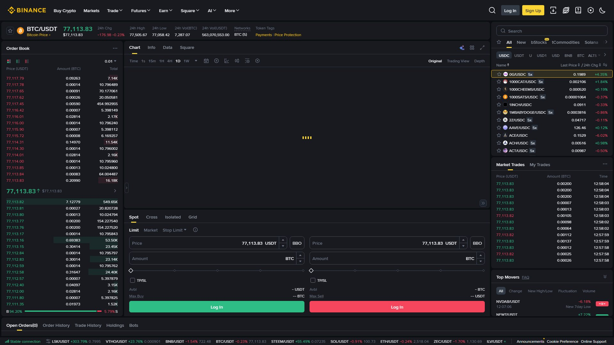

موبائل ایپ پر آپ Spot، Convert، P2P، Margin اور Futures — سب ٹریڈ کر سکتے ہیں۔ ایپ چھوٹی اسکرین کے لیے سادہ بنائی گئی ہے، اس لیے پہلی نظر میں آپشنز کم لگتے ہیں — لیکن اوپر والے ٹیب اور نیچے والے مینو کے ذریعے ہر فیچر تک رسائی ممکن ہے۔

تصویر 42.1: Spot ٹریڈنگ اسکرین — پینِل کی ترتیب: کرنسی جوڑا، آرڈر ٹائپ، قیمت/مقدار، اور Buy/Sell بٹن۔ موبائل ایپ میں یہی عناصر عمودی ترتیب میں دکھائی دیتے ہیں۔ (Spot trading screen — panel layout: currency pair, order type, price/amount, and Buy/Sell buttons. In the mobile app these appear in vertical order.)
موبائل پر Convert، P2P، Margin اور Futures تک رسائی
Futures پر Leverage اور Stop Loss کی اہمیت
موبائل ٹریڈنگ کی مخصوص غلطیاں (چھوٹی اسکرین، جلدی، غلط ٹیپ)
📖 42.1 موبائل پر Spot Trading
نیچے مینو → Trade → Spot
↓
کرنسی جوڑا منتخب کریں (مثلاً BTC/USDT)
↓
آرڈر ٹائپ: Market / Limit / Stop-Limit
↓
مقدار (Amount) درج کریں یا سلائیڈر استعمال کریں
↓
Green (Buy) یا Red (Sell) بٹن دبائیں
↓
تصدیق کی اسکرین → 2FA → Confirm → Done ✅
Market بمقابلہ Limit (موبائل پر)
Market: فوری خرید/فروخت، موجودہ بہترین قیمت پر۔
Limit: آپ کی مقرر کردہ قیمت پر؛ نہ پہنچے تو آرڈر کھلا رہتا ہے (Open Orders میں دیکھیں)۔
ٹپ: موبائل پر ہمیشہ Limit ٹریڈ کریں جب جلدی نہ ہو — Market میں Slippage (قیمت کا فرق) ہو سکتا ہے، خاص طور پر کم لیکویڈیٹی والے کوائن میں۔
موبائل پر فیصد کا استعمال:
Amount کے نیچے: 25% | 50% | 75% | 100%
مثال: آپ کے پاس 100 USDT ہیں
25% دبائیں → 25 USDT کی BTC خرید
فوری، غلطی کا امکان کم
📖 42.2 موبائل Chart کیسے پڑھیں
موبائل Chart ڈیسک ٹاپ جیسا مکمل ہوتا ہے، بس کم جگہ میں:
عمل
طریقہ
ٹائم فریم بدلنا
اوپر والے بٹن: 1m, 5m, 15m, 1h, 4h, 1D
زوم
دو انگلیوں سے Pinch (ان/آؤٹ)
Indicator شامل کرنا
Chart پر tap → Indicators → MA, RSI, MACD
آرڈر لائن
Chart پر tap کر کے قیمت پر Limit لگائیں
رسمی خطوط
Chart پر tap → Drawing tools
محدودیت: موبائل پر ایک وقت میں 1–2 Indicators آسانی سے دیکھے جا سکتے ہیں۔ گہری تکنیکی تجزیہ (Multi-timeframe, Multiple indicators) کے لیے ڈیسک ٹاپ بہتر ہے۔
📖 42.3 موبائل پر P2P، Convert، Margin، Futures
P2P (موبائل)
Trade → P2P → Buy/Sell → کوائن (USDT) → ادائیگی طریقہ منتخب
→ مرچنٹ منتخب → Order → ادائیگی کریں → "Paid" کا نشان لگائیں
→ مرچنٹ وصولی کی تصدیق → Escrow سے ریلیز
موبائل پر QR کوڈ/بینک ایپ سے ادائیگی آسان ہے۔
اپنے اسکرین شاٹ محفوظ رکھیں (ثبوت کے لیے)۔
ادائیگی صرف اسکرین پر دکھائے گئے اکاؤنٹ میں کریں — کبھی چارٹ/ٹیلی گرام کے اکاؤنٹ میں نہیں۔